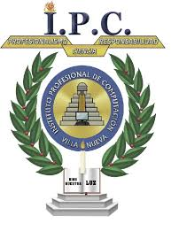

Inicio
Acerca de
servicios
Contactanos
formulario
ACERCA DEL INSTITUTO PROFESIONAL DE COMPUTACIÓN
MISIÓN
Somos una entidad educativa de dieciséis años de experiencia dedicada a la formación constructivista de jóvenes estudiantes del nivel medio que ofrece a la sociedad guatemalteca trabajadores altamente calificados en las ciencias de administración, contables, secretariales e informáticas; y que además poseen una sustentación humanística de primer nivel.
VISIÓN
Ser un centro educativo insignia en la educación responsable de jóvenes que se promuevan competentes según los estándares nacionales e internacionales, a través del ejercicio profesional de una formación significativa.
HISTORIA
El Instituto Profesional de Computación (IPC) nació en 1993 gracias a la iniciativa de tres profesores cuyas especialidades eran la informática, las ciencias contables, y las humanidades. La actividad de la institución se orientó a dos carreras del nivel medio, del ciclo diversificado, específicamente Bachillerato en Computación con Orientación Comercial, y Perito Contador con Orientación en Computación.
Había demanda de una institución moderna y seria que sirviera las dos carreras mencionadas con responsabilidad, a la vez que aplicara conceptos vanguardistas. Debe resaltarse que el IPC contaba con equipo informático de última generación; y que esta condición se ha mantenido vigente hasta la fecha.
En principio se atendió a dos secciones, una de cada carrera, únicamente de cuarto grado. En 1994 se contaba con cuatro secciones: dos de cuarto y dos de quinto. Se graduó a la primera promoción de bachilleres. La primera promoción de peritos contadores fue la de 1996.
En 1998 los servicios educativos del IPC crecieron hacia el ciclo básico, además de implementarse el Secretariado Bilingüe (español/inglés) con Orientación en Computación. Se llegó así a la estructura actual del plantel que sirve los tres grados básicos y tres carreras, culminando exitosamente la formación de muchas promociones.
UBICACIÓN
7a. calle 3-40 zona 1 de Villa Nueva

{kind=link}